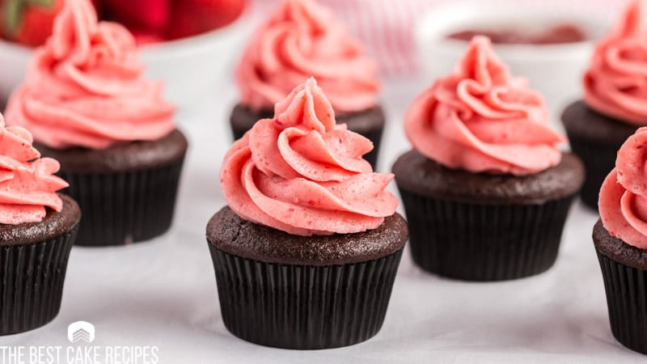

Introduction.
Today I will be teaching you how to make chocolate cupcakes with strawberry buttercream icing. These are a perfect treat for any ocasion,
anyone who tries them will be begging for the recipe!

Ingredients.
You will need...
For cupcakes:
- 9 tablespoons soft unsalted butter
- 4 ounces bittersweet chocolate (broken into pieces)
- 1¼ cups morello cherry jam
- ¾ cup superfine sugar
- 1 pinch of salt
- 2 large eggs (beaten)
- 1 cup self-rising flour
For icing:
- 1 pound (4 cups) of Powdered Sugar
- 1 cup Butter (I use Salted Sweet Cream Butter)
- ¼ cup Pureed Strawberries
Instructions.
Cupcakes:
- Preheat the oven to 180°C.
- Put the butter in a heavy-bottomed pan on the heat to melt. When nearly completely melted, stir in the chocolate.
Leave for a moment to begin softening, then take the pan off the heat and stir with a wooden spoon until the butter and chocolate are smooth and melted.
- Now add the cherry jam, sugar, salt and eggs. Stir with a wooden spoon and when all is pretty well amalgamated stir in the flour.
Scrape and pour into the muffin papers in their tin and bake for 25 minutes. Cool in the pan on a rack for 10 minutes before turning out.
- When the cupcakes are cool, take out onto a cooling rack and using your icing (instructions below) in a piping bag, pipe icing onto
cupcakes and enjoy!
Icing:
- Mix Powdered Sugar and Butter in a large bowl with a mixer on low.
- Add Strawberry Puree and mix until icing holds peaks.
Now your cupcakes are done! Decorate and enjoy ☺